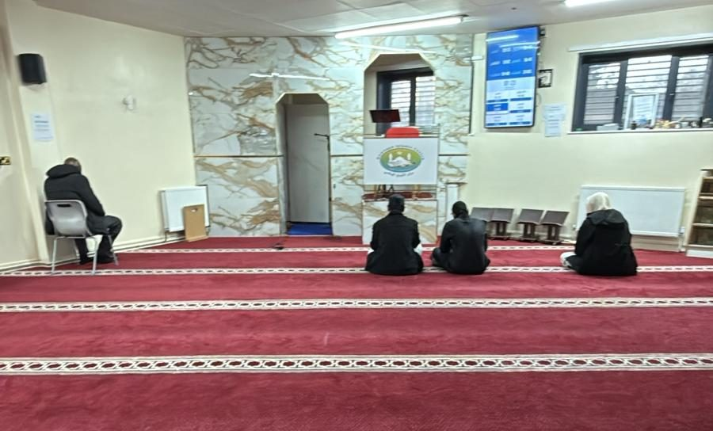

Home / About
من نحن
About the masjid
A masjid and community centre on Revesby Walk in Nechells, run by a registered charity for everyone who prays here.
Who we are
Attarbiya Masjid
Attarbiya Masjid is at 2 Revesby Walk, Nechells, Birmingham B7 4LG. It is a place of worship and a community centre, with the five daily prayers in congregation, Jumu'ah on Fridays, Al Furqan madrasah for children, and lessons and conferences for adults.
The charity behind it goes back to 2006, when it was set up as the Somali Education and Cultural Centre to serve the community in Bordesley Green. It was registered with the Charity Commission in 2011. Today it is registered as Kowneyn Education and Cultural Centre, and it is the same charity, number 1142204, that the community knows as Attarbiya Masjid.
The building was once the Vauxhall Sports and Social Club. The charity took it on in 2019, moved its home here from Garrison Lane in Bordesley, and spent the next few years turning a social club into a masjid. Much of that story still lives only in people's memories, so we are gathering it on Our Story. If you were there, we would like to hear from you.
The name
Tarbiya (تربية) is the Arabic word for upbringing: raising a person with care, so they grow in faith, knowledge and character. It is a fitting name for a masjid that teaches children in its own madrasah and hosts lessons for adults.

Leadership
The board of trustees
The trustees are volunteers and are responsible for the charity. None of them is paid by it.
- Abdulmajid Mohamed HersiChair, Board of Trustees
- Hussein Abdallah OsmanTrustee and Secretary
- Abdifatah Abdullahi AbdiTrustee and Treasurer